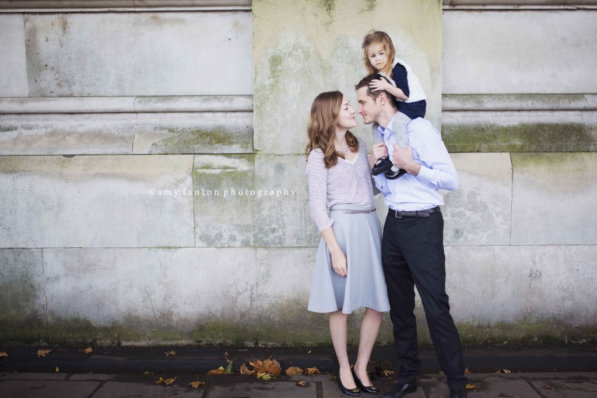

Family
Westminster London Family Photography
19 November 2014

How picture perfect is this family?! More from this iconic London mini session — walking across Westminster Bridge with Big Ben behind them.
I had the pleasure of shooting this London family photography session several weeks back with the goal of creating family photos for their Christmas card. Ironically I have left out those specific images so as not to to ruin their surprise, but in the meantime I thought I would share some of my other favorite shots from this family photo shoot below.
We met in Westminster so we could shoot around several of the most iconic London landmarks and commemorate their first holiday living abroad. The sweet little girl was a copy of her mom with the prettiest bluish green eyes. Her grandmother was visiting for a few days so we also managed to sneak in some sweet photos of the two of them as well.
This shoot reminds me I’ve been so busy with work I am completely behind on my own family’s Christmas cards — I need to do a family photography session myself ASAP!!!
To schedule your London family photography session please email me at amy@fantonphotography.com or give me a call at 07462907790. I look forward to working with you!